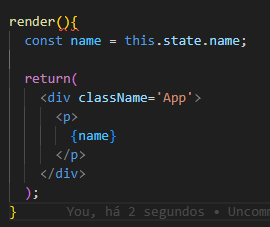

O estado é uma das partes mais importantes no react, são os dados dos componentes ultilizam, toda vez que é
mudado, ele muda o componente.
Segue abaixo os principais exemplos, mais usados:
constructor: o constructor no react é preciso q receba a propriedade
props
class App extends Component{
constructor(props){
super(props);
this.state = {
name: "Jose"
}
}
}
Agora é usando o componente, criado no exemploa acima

props é uma forma reduzida de dizer propriedades. Elas são usadas
para passar dados entre componentes. O fluxo de dados do React entre componentes é
unidirecional (somente do componente pai para o componente filho).
super No JavaScript, o super refere-se ao construtor da classe pai. (No
nosso exemplo, ele refere-se à implementação de React.Component.)
É importante lembrar que você não pode usar o this em um construtor até que você tenha
chamado o construtor pai.
states:
É o estado odo componente, e qualquer componente pode usar, nao importa qual seja.
Geralmente state é um componente com os dados, propriedades, caracteristicas
Usando Destruct: Alem de usar as chaves para adicionar os elementos criados tambem pode se usar o destructor Exemplo: